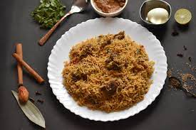

I love biriyani

The Biriyani
If you guys are reading this then probably you guys
have clikced on my webpage that I've created so
welcome in and right now what you saw on the above
picture is biriyani a dish that is popular worldwide
and loved by the spice lovers, why is it so popular?
cuz it is delecious and it is awesome and nothing over
the dish is tastier that's it......
2 ½ tablespoons olive oil
3 tablespoons plain yogurt
2 tablespoons distilled white vinegar
1 medium onion, sliced1 medium onion, sliced
2 medium tomatoes, chopped
2 small green chile peppers
2 cloves garlic, crushed
2 tablespoons garam masala
1 tablespoon dried mint
salt and pepper to taste
5 sprigs cilantro
1 (3 pound) whole chicken, skin removed and cut into pieces
2 quarts water
4 cups uncooked basmati rice
1 cinnamon stick
1 bay leaf
4 pods green cardamom
1 pod black cardamom
¼ teaspoon powdered yellow food coloring